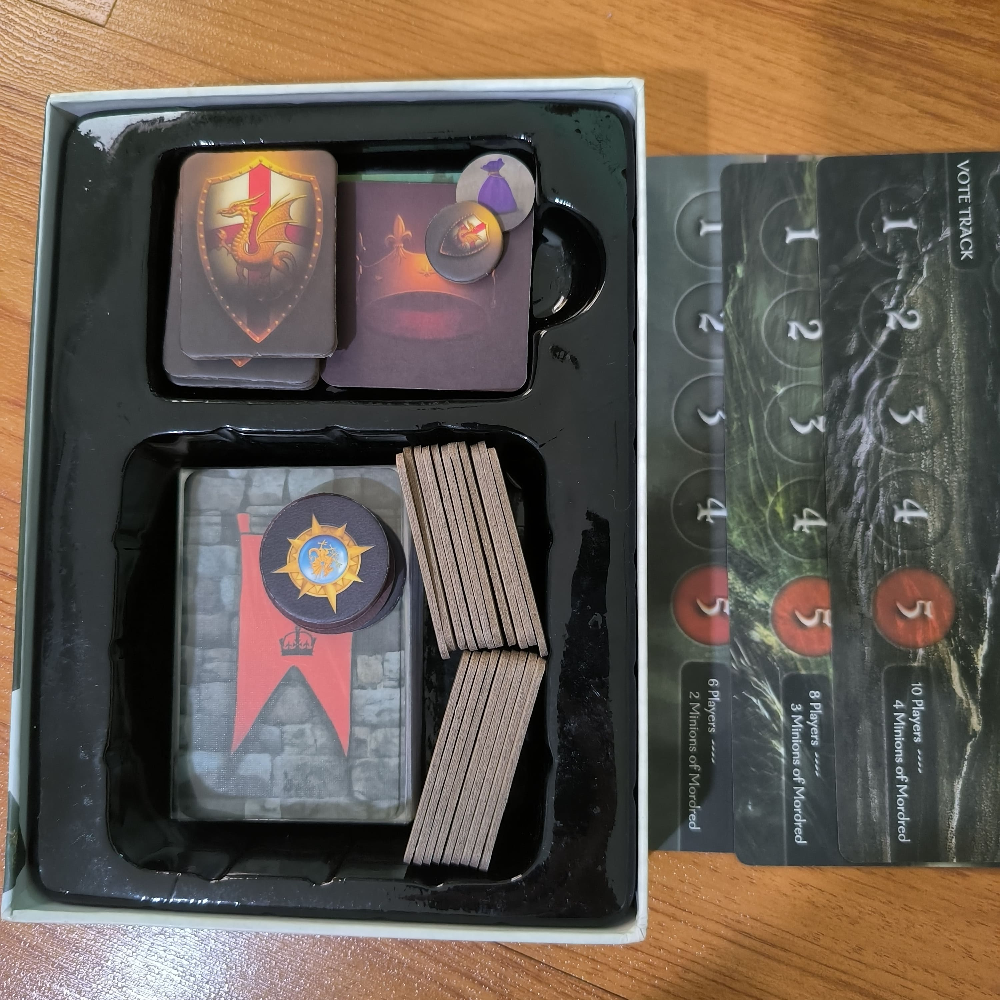

-

- |
- Boardgames

How to play : Avalon
การตั้งค่าเกม
- จำนวนผู้เล่น: 5-10 คน
- การแจกบทบาท: บทบาทถูกแจกตามจำนวนผู้เล่น
- ฝ่ายดี (Loyal Servants of Arthur) มี Merlin, Percival, และ Knights
- ฝ่ายร้าย (Minions of Mordred) มี Assassin, Mordred, Morgana, และ Oberon
- การเปิดเผยตัวตน:
- ทุกคนหลับตา
- ผู้เล่นฝ่ายร้ายจะลืมตาและรู้จักกัน
- Merlin จะลืมตาเพื่อรู้ว่าใครคือฝ่ายร้าย แต่ฝ่ายร้ายไม่รู้ว่าใครคือ Merlin
- Percival จะรู้ว่าใครเป็น Merlin และ Morgana แต่ไม่รู้ว่าใครเป็นใครระหว่างสองคนนี้
การเล่นเกม
- การเลือกหัวหน้าภารกิจ (Leader):
- หัวหน้าภารกิจจะถูกเลือกหมุนเวียนในแต่ละรอบ
- หัวหน้าภารกิจจะเลือกทีมไปทำภารกิจ (จำนวนคนในทีมขึ้นอยู่กับรอบและจำนวนผู้เล่น)
- การโหวตเลือกทีม:
- ทุกคนโหวตว่าเห็นด้วยหรือไม่เห็นด้วยกับทีมที่หัวหน้าภารกิจเลือก
- หากทีมถูกยอมรับ (ส่วนใหญ่เห็นด้วย) ภารกิจจะเริ่มต้น
- หากทีมไม่ผ่าน (ส่วนใหญ่ไม่เห็นด้วย) หัวหน้าภารกิจจะเปลี่ยนคนใหม่และเลือกทีมใหม่
- การทำภารกิจ:
- ผู้เล่นในทีมภารกิจจะเลือกว่าจะทำให้ภารกิจสำเร็จ (Success) หรือไม่สำเร็จ (Fail)
- ผู้เล่นฝ่ายดีต้องเลือก Success เสมอ
- ผู้เล่นฝ่ายร้ายสามารถเลือกได้ทั้ง Success หรือ Fail
- การ์ดภารกิจจะถูกส่งมาให้หัวหน้าภารกิจและสุ่มรวมกัน
- หากมีการ์ด Fail อย่างน้อยหนึ่งใบ ภารกิจจะล้มเหลว
- การทำภารกิจต่อไป:
- ทำซ้ำขั้นตอนการเลือกหัวหน้าภารกิจ การเลือกทีม และการทำภารกิจจนกว่าจะมีภารกิจที่สำเร็จหรือไม่สำเร็จตามเงื่อนไขที่กำหนด
การจบเกม
- ฝ่ายดีชนะ: หากทำภารกิจสำเร็จ 3 ครั้ง
- ฝ่ายร้ายชนะ: หากทำภารกิจล้มเหลว 3 ครั้ง หรือสังหาร Merlin ได้สำเร็จหลังจากภารกิจสำเร็จครบ 3 ครั้ง
- สังหาร Merlin: หลังจากที่ฝ่ายดีทำภารกิจสำเร็จครบ 3 ครั้ง ฝ่ายร้ายจะมีโอกาสเดาว่าใครคือ Merlin ถ้าเดาถูก ฝ่ายร้ายจะชนะ